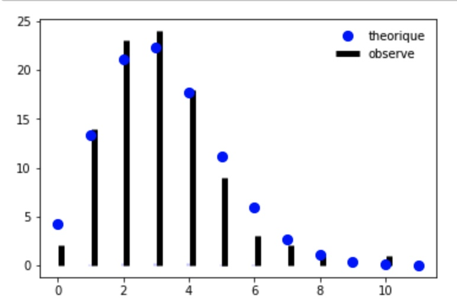
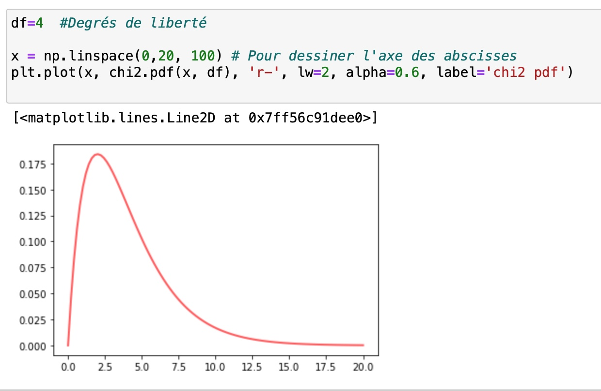

L’allure des courbes ci-dessous et le scénario (combien de fois un événement se produit) nous amène à penser que la distribution pourrait suivre une loi de Poisson. On sait par le cours de stats (des années non covid…) que la meilleure loi de Poisson à ajuster sur une distribution est la loi dont le paramètre est la moyenne empirique. Ici, le tableau de l’énoncé nous permet de calculer la moyenne : 1/100(0.2+1.14+….)=3,17
L’exercice consiste donc à décider si la distribution observée (dans l’énoncé) est suffisamment proche de la distribution théorique (celle qui suivrait une loi de Poisson de paramètre 3,17).
On va donc commencer par tracer de manière superposée les deux séquences de valeur, pour un jugement à l’oeil qui permet déjà une première idée assez favorable à l’hypothèse que les deux distribution sont proches l’une de l’autre.

On va maintenant faire un test du \chi^2 pour voir si l’écart entre les deux distributions s’explique suffisamment bien par les fluctuations d’échantillonnage (c’est à dire le caractère partiellement aléatoire du tirage selon une loi de Poisson de paramètres 3,17).
| 0 ou 1 | 2 | 3 | 4 | 5 | 6 et plus | |||
|---|---|---|---|---|---|---|---|---|
| Effectif observé | 16 | 23 | 24 | 18 | 9 | 10 | ||
| Effectif théorique | 17,5 | 21,1 | 22,3 | 17,7 | 11,2 | 10,2 |
On caractérise alors l’écart entre ces distributions par la statistique du \chi^2 :
\sum_{categories}\frac{(observe-theorique)^2}{theorique}=0.87
Reste à voir si cette valeur est dans la zone que les fluctuations d’échantillonnage peuvent bien expliquer ou si, au contraire, elle est peu vraisemblable car suspectement trop grande (ou trop petite !).
Pour faire un test du \chi^2, il nous faut d’abord déterminer quelle loi du \chi^2 utiliser, c’est à dire connaître le nombre de degrés de liberté. Il y a 6 catégories dans le tableau. Il faut alors retrancher 1 car la répartition (partiellement aléatoire) entre les catégories sur les 100 jours est contraintes par l’effectif total (100 jours).
Ensuite, il faut encore retrancher 1 pour la raison suivante : la distribution théorique n’est pas indépendante de la distribution observée. En effet, cette distribution théorique est la loi de Poisson de paramètre 3,17, or ce paramètre a été calculé comme la moyenne de l’échantillon, c’est à dire des données observée. La théorie du test du \chi^2 dit qu’il faut retrancher du nombre de degrés de liberté le nombre de paramètres de la distribution théorique qui ont été estimés à partir de l’échantillon qui a servi à calculer la distribution observée, soit ici 1.
Ainsi il reste 4 degrés de liberté. On affiche ci-dessous la distribution du \chi^2 pour 4 degrés de liberté.

La table du \chi^2 pour 4 degrés de liberté indique que la valeur de \chi^2 a une probabilité de 5% de dépasser le seuil de 9,49 (c’est ce seuil qu’on a cherché dans la table). Avec une statistique de 0.87, on est bien en dessous de ce seuil et donc on peut conclure qu’on n’a aucune raison de rejeter l’hypothèse que la distribution observé ne suit pas une loi de Poisson.